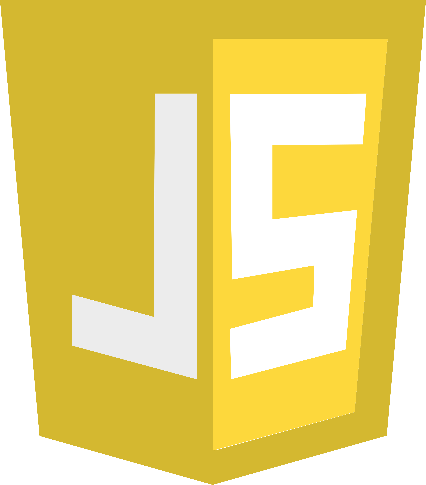

Projects

O(1) Landing Page
The O(1) Landing Page is a website designed to provide all the information needed to get involved in an O(1) Software Network project to current and future members.




Appliance Repair
The Appliance Repair Application is a website designed to teach members computer science through hands-on appliance and device repair while getting paid to learn.


Music Management
The Music Management Application is designed to provide all the management tools required for artists to focus on their crafts and allows fans to get involved in helping their favorite artists grow.


O(1) Admin Dashboard
The O(1) Administrative Dashboard is a tool used internally to coordinate data between Meetup, Discord, and Patreon.

Voting Application
The Voting Application is a tool designed to allow citizens to have a say in what bills are being passed locally, state-wide, and on the national level.

Food Coordination
The Food Coordination System is designed to bring together local food providers to provide a healthier and more local options for schools to ensure our youth are receiving the healthiest options possible.

O(1) Discord Bot
The O(1) Discord is used to automate some of the tasks required to manage the O(1) Software Network Discord server.

Discussion Application
The Discussion Application is designed to help people become better communicators, analyze multiple perspectives of an argument/discussion, and develop higher-level thinking skills.

Response Application
The Response Application is designed to help the local community get involved in keeping their communities safe.